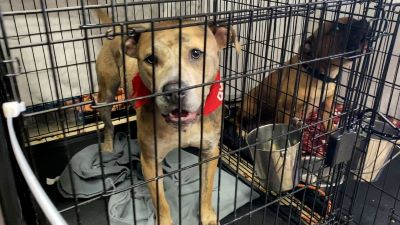
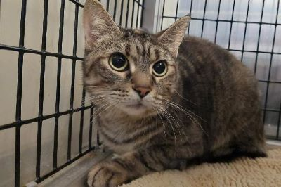

This is Jovi
Jovi is 2 years old.
He is clean from any parasites.
Jovi loves chicken and a green ball is his favorite toy.
Jovi was found under an old oak tree, after being abandoned by their owners who moved to another city.
Jovi is a calm dog who loves cuddles and long walks and is the best at giving comfort.
Give Jovi a chance and he will make your days more bright.
Jovi is 2 years old.
He is clean from any parasites.
Jovi loves chicken and a green ball is his favorite toy.
Jovi was found under an old oak tree, after being abandoned by their owners who moved to another city.
Jovi is a calm dog who loves cuddles and long walks and is the best at giving comfort.
Give Jovi a chance and he will make your days more bright.
 This is Hybrid
Hybrid is 3 years old.
His favorite food is beef.
Hybrid was brought to us when a couple almost hit him with their car on an old road.
He was really skinny and sad.
But if you give him beef and a few hugs he is the happiest dog in the world.
For Hybrid evey hour is play hour.
Hybrid is 3 years old.
His favorite food is beef.
Hybrid was brought to us when a couple almost hit him with their car on an old road.
He was really skinny and sad.
But if you give him beef and a few hugs he is the happiest dog in the world.
For Hybrid evey hour is play hour.
This is Honey
Honey is 1 years old.
Honeys story is that a little girl found him in a play park, with his leg cut open.
She brought her to us.
Our medics the medics had immediately tended to the wound.Now, she is all better and ready for long walks and runs.
She is the best companion when you're feeling down.
Her favorite food is duck dog food.
Honey is 1 years old.
Honeys story is that a little girl found him in a play park, with his leg cut open.
She brought her to us.
Our medics the medics had immediately tended to the wound.Now, she is all better and ready for long walks and runs.
She is the best companion when you're feeling down.
Her favorite food is duck dog food.
These our puppy siblings:Bonnie, Olly & Clara
The siblings were found in a sewer, abandoned by their mother.
Bonnie is the first baby.She is the oldest and the most serious of the three.
But don't be fooled she is always ready to play,just give her a treat and she is your new best friend.
Olly is our baby boy.
Olly is the most hyper puppy you will ever meet.He is a bit shy at first,but when he is with his sisters he is his true self.
He loves bone treats.
Lastly,our Clara.
Clara is the baby of our shelter.
She is cuddly and always happy to play.She is the youngest,but she has the fiercest heart.
The siblings were found in a sewer, abandoned by their mother.
Bonnie is the first baby.She is the oldest and the most serious of the three.
But don't be fooled she is always ready to play,just give her a treat and she is your new best friend.
Olly is our baby boy.
Olly is the most hyper puppy you will ever meet.He is a bit shy at first,but when he is with his sisters he is his true self.
He loves bone treats.
Lastly,our Clara.
Clara is the baby of our shelter.
She is cuddly and always happy to play.She is the youngest,but she has the fiercest heart.
 This is Bailey
Bailey is 4 years old
Bailey was actually born in our shelter and hasn't been adopted since.
Bailey loves belly scratching,sleeps a lot and he is a really low-maintenance.
Loves cuddles and fish.
You will be happier by her side.
That's the Bailey magic.
Bailey is 4 years old
Bailey was actually born in our shelter and hasn't been adopted since.
Bailey loves belly scratching,sleeps a lot and he is a really low-maintenance.
Loves cuddles and fish.
You will be happier by her side.
That's the Bailey magic.
 This is Brownie
This is BrownieBrownie is one of the babies in our shelter.
Bownie loves laying on top of people,on their head,stomach even between legs.
He loves human contact.
We found Brownie in a box near a dumpster
He is cleaned and ready for his new home and his forever person.